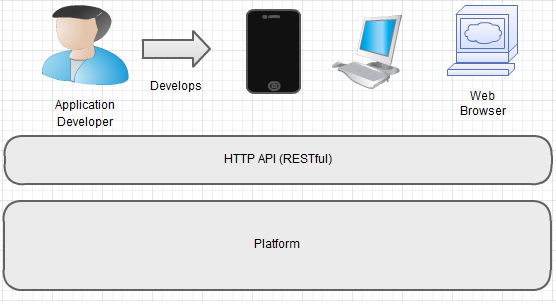

A presentation outlining platform approach behind Mifos 'x', the next evolution of Mifos software for MFIs.
The idea was to '..create and deploy technology that allows the microfinance industry to scale..' and mifos would be responsible for:
Some of the major challenges that faced mifos and continue to face mifos today:
Based on whos-using-mifos, mifos has been adopted by over 30 MFIs. Several of these are large (>20,000 clients). Some of these MFIs have stated that mifos was critical in enabling them to scale over the last number of years.
Given mifos is a free open source software, wider adoption might be expected. Right now its not a good fit for the wider community - tends to suit group lending type MFIs. Migrations onto mifos have proved difficult/costly.
We want to go back to the platform idea. We feel this can help address the '..many MFIs with widely different requirements..' challenge.
Products built on top of the platform can be in any technology for any device (though a lightweight scripting language like JavaScript seems sensible for rapid prototyping to clients). This gives control to the people who are trying to provide the right functionality for a particular MFI.
The central technical aspect of mifos X is that all back-end capabilities are exposed and easily consumable through a RESTful HTTP API. It is a platform that allows for client applications to be built on/against it.
The goal of the API is to empower developers to build apps on top of the Mifos X Platform.
Privately and also publically through the mailing list we have received some feedback. It has ranged from a general agreement with the approach and technologies used to more detailed feedback on certain elements missing from api such as:
The APIGEE document referenced in documentation outlines approaches of dealing with this which we would follow.
Whats currently in the platform is a simple implementation of Individual Lending capabilities suitable to a small MFI that worked with us from Jan through to Mar (Thank you Henrik@CreoCore)
Lots of possibilities but whats important is we evolve the platforms microfinance cababilities - through collobaration with community specialists with a willing customer on the end of requirements.
/
#